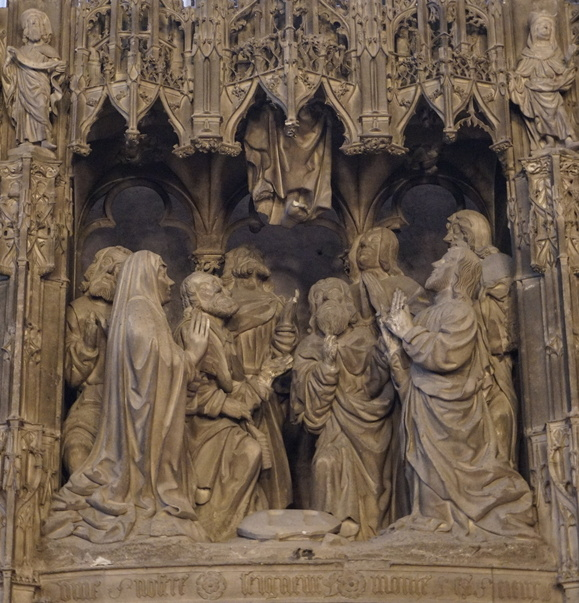
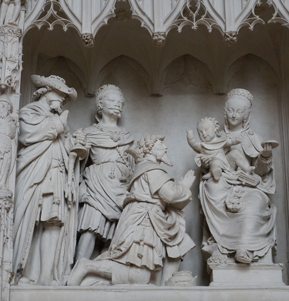

ℹ️ Comment jouer ? Clique sur la zone correspondante à la question pour dévoiler son histoire.
La scène représentée ici est l'Ascencion.
Sauras-tu retrouver Jésus sur cette image ?
Bravo ! L’Ascension marque la dernière rencontre de Jésus avec ses disciples après sa Résurrection et son élévation au ciel.

La scène représentée ici est l'Épiphanie.
Sauras-tu retrouver Jésus sur cette image ?
Bravo ! L'Épiphanie est une fête chrétienne célèbrant le Messie venu et incarné dans le monde et qui reçoit la visite et l'hommage des trois Rois mages. Elle a lieu le 6 janvier.

Félicitations !
Tu as fini tous les niveaux...
De nouveaux apparaîtront bientôt !